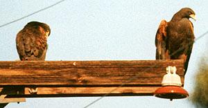

| These photographs accompany records that have been recently submitted to the committee. This record
has been ACCEPTED.  Harris's Hawk Parabuteo unicinctus 18 Jan. 1995, Santee, SD 1996-080C © 1995 Michael M. Rogers Back to CBRC Rare Bird Photos |